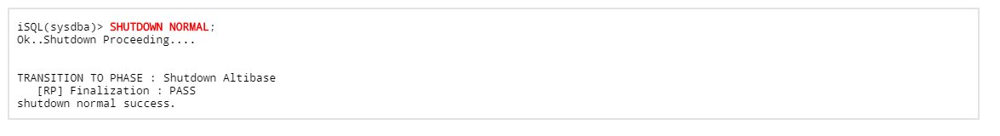
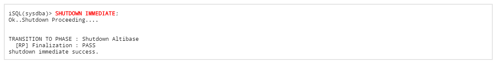
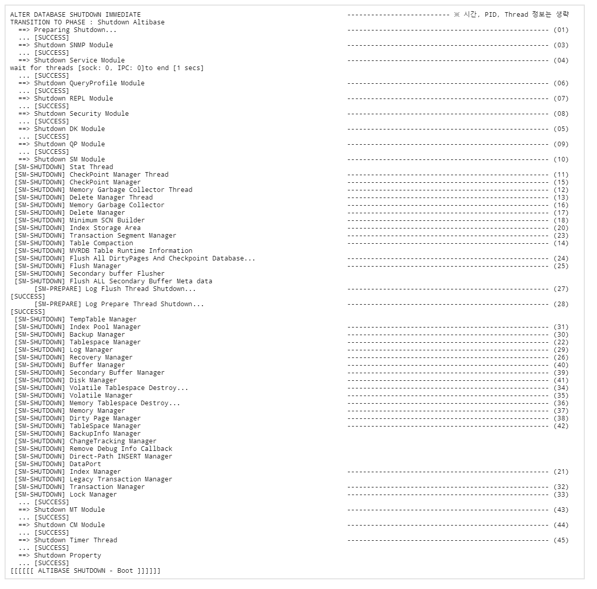

개요
Altibase가 구동과 종료되는 과정에 대해서 설명하고, 각 과정에서 Altibase 내부 모듈들이 동작하는 내용과 사용자가 수행할 수 있는 작업에 대해서 기술한다.
※ 이 문서에서 사용한 예시는 Altibase 7.1.0 버전에서 수행하였으며, 출력 결과는 Altibase 버전에 따라 다를 수 있다.
Altibase 구동
Altibase는 구동 과정을 4 단계로 구분한다.
Altibase가 구동되는 각 단계의 상태와 각 단계로 전이될 때 내부적으로 수행되는 동작들에 대해서 기술한다.
또, 사용자가 각 단계에서 수행할 수 있는 작업들에 대하여 기술함으로써 Altibase를 효율적으로 사용할 수 있도록 한다.
구동 개요
DB를 구동 과정이 한 단계로 되면, 서버가 구동되기 전 할 수 있는 작업과 서버 구동 후 할 수 있는 작업이 엄격히 구분되어 한 번의 명령어 실행으로 DB가 구동되기 때문에 DBA가 클라이언트와 구별된 작업을 수행할 수 없다.
이로 인해 메타 마이그레이션, 복구 기능에 대한 제약 사항이 발생하게 된다.
이러한 문제점을 해결하기 위해 Altibase는 DB가 구동되는 단계를 PROCESS, CONTROL, META, SERVICE 의 4 단계로 구분하여 제공한다.
각 단계별로 DBA가 DB의 생성, 메타 업그레이드, 선택별 복구 등의 작업이 가능하다.
Altibase를 구동할 때, 각 단계로 전이하기 위해서는 “STARTUP” 이라는 명령어를 사용하게 되는데, 이 명령어는 iSQL에 SYSDBA 권한으로 접근한 후에 사용할 수 있다.
각 단계로 상태를 변경할 때, 다음 단계로의 전이는 가능하지만 이전 단계로의 복귀는 지원하지 않는다.

위의 그림에서 화살표는 상태가 전이되는 과정을 나타내고, 색상은 각 단계의 상태를 나타낸다.
사용자는 각 단계에서 제공되는 기능을 수행할 수 있다.
아래에서 각 단계별 Altibase 내부적으로 수행되는 동작들과 사용자가 수행할 수 있는 작업들에 대해서 설명한다.
PROCESS 단계
- PROCESS 단계 전환 명령어
Altibase를 구동시킬 때의 가장 처음 단계로, “STARTUP PROCESS” 명령어를 통하여 상태를 전이할 수 있다.
이 단계에서는 DB에 대한 접근이 불가능하다.PROCESS 단계는 각 모듈(Storage Manager, Query Processor, Communication Manager 등)이 초기화되는 단계이며, 서버와 iSQL이 통신을 하기 위해 Altibase 프로세스를 시작하게 된다.
- 초기 → PROCESS 단계의 내부 동작
- 초기 → PROCESS 단계의 내부 동작
Altibase는 구동이 되는 과정을 $ALTIBASE_HOME/trc/altibase_boot.log 파일에 기록하기 때문에 각 단계에서 DB 내부적으로 어떤 동작을 수행하는지 확인할 수 있다.
다음은 PROCESS 단계로 구동 될 때 기록된 altibase_boot.log 내용이며, 이를 통하여 어떤 동작들을 수행하는지 알아본다.

Altibase를 생성 또는 구동하기 위한 각 모듈의 초기화
- 프로퍼티 파일 Check 및 Loading (01)
- $ALTIBASE_HOME/conf/altibase.properites 파일을 체크 및 로딩
- Licence 유효 체크 (02)
- Process Signal System 초기화 (04)
- Checking ide Layer Initialization Result (05)
- Error Message Binary File 초기화 (06)
- All Module Message Logging System 초기화 (07)
- Logging Host System Up-Time (09)
- Do Daemonizing (10)
- Process Lock File 초기화 (12)
- $ALTIBASE_HOME/conf/altibase.properties 파일에 Lock을 획득
- Altibase 프로세스의 중복 구동 방지
- Lock Manager (14)
- 동시성 제어를 위해 사용하는 lock item 을 초기화
- 서버의 주요 모듈 초기화
- Communication Manager (25)
- Storage Manager (26)
- Query Processor (27)
- Database Link Module (28)
- Altibase 프로세스를 구동하고 iSQL과 통신
- DB 공간 접근 불가
- Fixed Table 에 대한 접근만 가능
- Meta 관련한 초기화나 작업 불가능(DB 접근이 불가능)
- CREATE/DROP DATABASE 수행 가능
- PROCESS 단계에서 수행할 수 있는 작업
사용자가 PROCESS 단계에서 수행할 수 있는 작업은 다음과 같다.
CREATE DATABASE 구문을 사용하여 데이터베이스 생성

- 프로퍼티 값을 변경
- iSQL 에서 ALTER 명령어로 변경이 가능한 프로퍼티 값들을 변경
사용자가 조회활 수 있는 성능 뷰
뷰 설명 V$ACCESS_LIST Altibase에 접근하는 특정 IP 패킷의 접근 허용 및 제한 정보 V$ALLCOLUMN
성능 뷰를 구성하는 칼럼 정보
V$DBA_2PC_PENDING
분산 트랜잭션에서 in-doubt 상태의 트랜잭션 브랜치 목록
V$DIRECT_PATH_INSERT Direct-Path 업로드 관련 통계 정보 V$INSTANCE 현재 알티베이스의 다단계 구동 정보
V$NLS_TERRITORY 데이터베이스 또는 현재 세션에 설정 가능한 지역의 이름이 저장되어 있는 성능 뷰 V$PROPERTY
알티베이스 내부에 설정된 프로퍼티 정보
V$TABLE 모든 성능 뷰의 레코드 및 칼럼 정보
V$TIME_ZONE_NAMES TIME_ZONE 프로퍼티에 설정할 수 있는 지역 이름과 약어 및 UTC 오프셋 값의 목록 V$TRACELOG
트레이스 로깅 정보
V$TRANSACTION 트랜잭션 객체 정보 V$TRANSACTION_MGR 알티베이스 트랜잭션 관리자 정보 V$TXSEGS 바인딩 된 트랜잭션 세그먼트들의 정보 V$VERSION 알티베이스 버전 정보
- 프로퍼티 값을 변경
- CONTROL 단계 등의 상위 단계로 전이
CONTROL단계
- CONTROL 단계 전환 명령어
CONTROL 단계는 PROCESS 단계에서의 작업을 마치고 "STARTUP CONTROL" 명령어를 통해서 상태를 전이할 수 있다.

- PROCESS 단계 → CONTROL 단계의 내부 동작
CONTROL 단계는 DB의 복구가 가능한 수준까지 각 메니저들을 초기화하고, Storage Manager 모듈을 구성하는 주요 관리자(Buffer, Recovery, Disk 등)를 준비하는 단계이다.
다음은 CONTROL 단계로 구동 될 때 기록된 altibase_boot.log 내용이며, 이를 통하여 어떤 동작들이 수행되는지 알아본다.

- DB의 복구가 가능한 수준까지 각 모듈 초기화
- 서버 주요 모듈 초기화
- Communication Manager (01)
- Storage Manager (02)
- Query Processor (17)
- DDL, DML을 사용한 DB의 변경연산을 금지시킴
- 복구가 가능한 수준까지 Storage Manager 모듈 준비 (03) ~ (16)
- Buffer Manager, Disk Manager, Recovery Manager 등을 준비
- CONTROL 단계에서 수행할 수 있는 작업
사용자가 CONTROL 단계에서 수행할 수 있는 작업은 다음과 같다.
다음의 DB 복구 구문을 사용하여 Altibase 의 복구를 수행
- 온라인 로그파일 초기화
META 단계에서 DB Restart Recovery를 수행하기 때문에, CONTROL 단계에서 불완전 복구를 진행 할 경우 복구에 반영되지 않은 온라인 로그파일들이 DB를 구동시키는 과정에서 문제를 발생 가능성이 있다.
따라서, 복구를 진행 할 경우 META 단계로 전이하기 전에 반드시 다음의 명령어를 사용하여 온라인 로그파일을 Reset 해줘야 한다.

데이터베이스 모드 변경
성능 뷰 조회
PROCESS 단계에서 조회가 가능한 성능 뷰와 추가적으로 다음의 성능 뷰를 조회할 수 있다.
(일반 테이블은 조회 할 수 없다.)뷰 설명 V$BACKUP_INFO 현재까지 수행 된 모든 증분 백업에 대한 정보 V$DATAFILES
테이블스페이스에서 사용하는 데이터 파일의 정보
V$FILESTAT
디스크의 데이터 파일별 I/O 통계 정보
V$LFG 그룹커밋 관련 통계값
V$LOCK_WAIT
트랜잭션의 락 대기 상태 정보
V$LOG 로그앵커파일 정보 V$MEM_TABLESPACE_CHECKPOINT_PATHS 특정 테이블스페이스(메모리)에 대해 체크포인트 발생 시 변경된 페이지(Dirty Page)가 반영되는
데이터베이스 이미지 파일의 위치(디렉토리 경로)V$MEM_TABLESPACE_STATUS_DESC 메모리 테이블스페이스의 상태 값 내용 정보
V$OBSOLETE_BACKUP_INFO 더 이상 유지할 필요가 없는 백업에 대한 정보
(V$BACKUP_INFO의 일부로 자세한 내용은 V$BACKUP_INFO 정보 참고)V$TABLESPACES
테이블스페이스 정보
V$TSSEGS 모든 TSS 세그먼트들의 정보 - META 단계 등의 상위 상태로 전이
META 단계
- META 단계 전환 명령어
META 단계는 CONTROL 단계에서의 작업을 마치고 "STARTUP META" 명령어를 통해서 상태를 전이할 수 있다.

- CONTROL 단계 → META 단계의 내부 동작
META 단계는 CONTROL 단계에서 작업한 복구 과정에 대한 완료 단계이며, DB 구동을 위해 메모리와 디스크의 데이터 파일들을 체크하고 Restart Recovery 를 수행하는 단계이다.
다음은 META 단계로 구동 될 때 기록된 altibase_boot.log 내용이며, 이를 통하여 어떤 동작들이 수행되는지 알아본다.
- 오류 검사 및 Restart Recovery 하여 DB가 구동 가능한 수준까지 각 모듈의 초기화
- 각 모듈의 초기화
- Communication Manager (01)
- Storage Manager (02)
- Query Processor (16)
- Database Link Module (18)
- 데이터 파일에 대한 미디어 오류를 검사 (03) ~ (04)
- DB에 대한 Check / Identify 수행
- 정상 구동이 가능한지 메모리 / 디스크 테이블스페이스의 데이터 파일 및 온라인 로그파일 검사
- DBMS 에 대해 Restart Recovery 과정을 수행 (07)
- 정상 종료 후에 DB가 구동이 되면, Restart Recovery 과정이 생략되지만 비정상 종료 후에 DB를 구동하면 Restart Recovery 수행
- Transaction Segment Entries Rebuild (09)
- 트랜잭션이 시작되면 TSS(Transaction Status Slot)가 필요하기 때문에 Transaction Segment 를 Rebuild
- Transaction Segment가 Undo Tablespace에 포함되어 있기 때문에 Undo Tablespace를 Reset
- 체크포인트 쓰레드를 구동
- Minimum SCN Rebuild (10)
- MVCC 의 제공으로 인한 Old 버전의 데이터를 삭제하기 위한 Minimum SCN을 생성
- Garbage Collector
- Index의 Old Key 삭제
- Delete Manager
- Table의 Old Record 삭제
- Memory Index Rebuilding 수행
- 메모리는 휘발성이라는 특징을 가지고 있기 때문에 DB 종료 후 새로 구동할 때, Index Rebuild
- Memory Table Refining
- Memory DB의 Free slot, Free Page 정보는 디스크에 기록되지 않는 런타임 정보이기 때문에 구동 시 재구축해야 하며, 이런 작업을 Memory Table Refining 시 수행
- DDL, DML을 사용한 DB 변경 연산 금
지
- 각 모듈의 초기화
- 오류 검사 및 Restart Recovery 하여 DB가 구동 가능한 수준까지 각 모듈의 초기화
- META 단계에서 수행할 수 있는 작업
사용자가 META 단계에서 수행할 수 있는 작업은 다음과 같다.모든 성능 뷰 조회 가능
SERVICE 단계 등의 상위 상태로 전이 가능
SERVICE 단계
- SERVICE 단계 전환 명령어
SERVICE 단계는 META 단계에서의 작업을 마치고 "STARTUP SERVICE or STARTUP" 명령어를 통해서 상태를 전이할 수 있다.
- META 단계 → SERVICE 단계의 내부 동작
SERVICE 단계는 사용자가 DB 를 사용할 수 있는 최종 단계를 의미한다.
SERVICE 단계로 구동이 되면, 일반 데이터베이스 사용자가 접속 할 수 있는 상태가 된다.
다음은 SERVICE 단계로 구동 될 때 기록된 altibase_boot.log 내용이며, 이를 통하여 어떤 동작들이 수행되는지 알아본다.
- 사용자에게 정상적인 DB 서비스를 제공하기 위한 각 모듈 초기화
- Communication Manager 초기화 함 (01)
- Listener 시작
- DB 서비스를 위한 각 모듈 초기화 (02) ~ (03), (05) ~ (08)
- Query Processr, Database Link Module, Security Module 등
- Meta DB 체크 (04)
- 테이블, 인덱스 등
- 이중화 모듈 초기화 (09)
- 이중화 정보 Read
- 이중화 Manager 시작
- 이중화 Heart Beat Manager 시작
- 각 단계의 메시지를 iSQL로 전송하고, 성공 메세지를 보
냄
- Communication Manager 초기화 함 (01)
- 사용자에게 정상적인 DB 서비스를 제공하기 위한 각 모듈 초기화
- META 단계 → SERVICE 단계의 내부 동작
- SERVICE 단계에서 수행할 수 있는 작업
사용자가 SERVICE 단계에서 수행할 수 있는 작업은 다음과 같다.- iSQL 접속
정상적인 DB 운영이 가능한 상태
Altibase 중지
Altibase 중지의 개요 및 특징에 대해서 설명하고, Altibase 에서 제공하는 중지의 세 가지 옵션들과 Altibase 종료 시에 수행되는 동작들에 대해서 기술한다.
중지 개요
Altibase의 구동 과정은 4 단계로 구분되어 진행하지만, 중지을 하면 구동에서 수행한 과정을 역순으로 진행하며 1단계로 종료한다.
(SERVICE → META → CONTROL → PROCESS)현재 구동중인 Altibase 서버를 종료하기 위해서는 iSQL에 -sysdba 권한으로 접속하여 "SHUTDOWN" 명령어를 사용한다.
"SHUTDOWN" 명령어는 세 가지 옵션(NORMAL, IMMEDIATE, ABORT)을 지정하여 사용할 수 있다.
NORMAL, IMMEDIATE 는 Altibase 가 SERVICE 상태일 때만 수행가능하며, ABORT 는 어떤 상태에서도 수행이 가능하다
Altibase의 중지 명령어는 설치한 OS 계정으로만 수행이 가능하다.
NORMAL
서버를 정상적으로 종료하는 방식으로서, 서버는 모든 클라이언트들이 서버로부터 접속을 끊을 때까지 종료 작업을 대기한다.
NORMAL 옵션은 내부적으로 클라이언트 ↔ 서버 간 통신 세션을 감지하는 쓰레드 종료, 서비스 쓰레드의 종료, 자료 저장 관리자의 종료 등의 작업을 수행 한 후 Altibase 서버를 종료 한다.
NORMAL 옵션을 사용하여 Altibase 서버를 종료했을 경우, 다음과 같은 메세지가 출력된다.

- 다음은 NORMAL 옵션을 사용하여 Altibase 서버를 종료할 때, Altibase가 수행하는 동작들이다.
- 현재 유저가 sysdba 권한인지 확인
- 모든 세션이 종료할 때까지 대기
- 각 모듈(Storage Manager, Query Processor, Communication Manager 등)을 종료
- Altibase 프로세스 종료
IMMEDIATE
현재 연결된 세션들을 강제로 단절시킨 후 Altibase 서버가 현재 실행 중인 트랜잭션을 롤백시키고 Altibase 서버를 종료하는 방법이다.
Altibase 에서 제공하는 "SERVER STOP" 명령어를 사용하여 서버를 종료하는 경우에는 IMMEDIATE 옵션을 사용하여 종료하는 것과 동일한 동작을 하게 된다.
IMMEDIATE 옵션을 사용하여 Altibase 서버를 종료했을 경우, 다음과 같은 메세지가 출력된다.
 다음은 IMMEDIATE 옵션을 사용하여 Altibase 서버를 종료할 때, Altibase가 수행하는 동작들이다.
- 현재 유저가 sysdba 권한인지 확인
- 현재 연결 중인 모든 세션을 강제 종료
- 현재 수행중인 트랜잭션을 롤백
각 모듈(Storage Manager, Query Processor, Communication Manager 등)을 종료
- Altibase 프로세스 종료
-
 - "SHUTDOWN IMMEDIATE" 시의 내부 동작
altibase_boot.log를 살펴보면, 중지는 구동 할 때와 역순의 과정을 수행하여 종료한다. "SHUTDOWN IMMEDIATE" 시 Altibase 가 내부적으로 동작하는 작업은 다음과 같다.- 중지를 위한 준비를 하며, 각 모듈에 대해 종료
- SERVICE, Database Link, Security, Query Processor, Storage Manager 등의 모듈 종료 (02) ~ (10)
- 서버 운영 중 사용되었던 모든 Resource 등을 해제
- Checkpoint Manager, Memory Garbage Collector, Delete Manager 등 (11) ~ (42)
- Table Compaction (14)
- 메모리에 할당된 후 제대로 반환되지 않은 공간을 시스템에 반환
- Flush All Dirty Pages And Checkpoint Database (24)
- 메모리 버퍼에 적재된 페이지들 중 Dirty Pages 에 대해서 디스크로 Flush
- 메모리 테이블스페이스에 있는 데이터에 대해 체크포인프 수행
- Flush 해야 하는 대상과 체크포인트를 해야하는 대상이 많아지면 중지 시 대기 시간 증가
- 중지를 위한 준비를 하며, 각 모듈에 대해 종료
ABORT
Altibase 서버를 kill -9 시스템 명령을 사용하여 강제로 종료하는 방벙이다.
이 방법으로 Altibase 서버를 종료하면, 데이터베이스의 일관성을 보장할 수 없기 때문에 Altibase 서버를 구동할 때, 데이터베이스 복구 과정을 거치게 된다.
다음은 ABORT 옵션을 사용하여 Altibase 서버를 종료할 때, Altibase가 수행하는 동작들이다.
- 현재 유저가 sysdba 권한인지 확인
- 서버 프로세스에게 kill -9 를 전송
- 서버 프로세스가 종료 될 때까지 대기
{kind=link}
{kind=link}
{kind=link}
{kind=link}
{kind=link}
{kind=link}
{kind=link}
{kind=link}
{kind=link}
{kind=link}
{kind=link}
{kind=link}
{kind=link}
{kind=link}
{kind=link}
{kind=link}
{kind=link}
{kind=link}
{kind=link}
{kind=link}
{kind=link}
{kind=link}
{kind=link}
{kind=link}
{kind=link}
{kind=link}
{kind=link}
{kind=link}
{kind=link}
{kind=link}
{kind=link}
{kind=link}
{kind=link}
{kind=link}
{kind=link}
{kind=link}
{kind=link}
{kind=link}
{kind=link}
{kind=link}
{kind=link}
{kind=link}